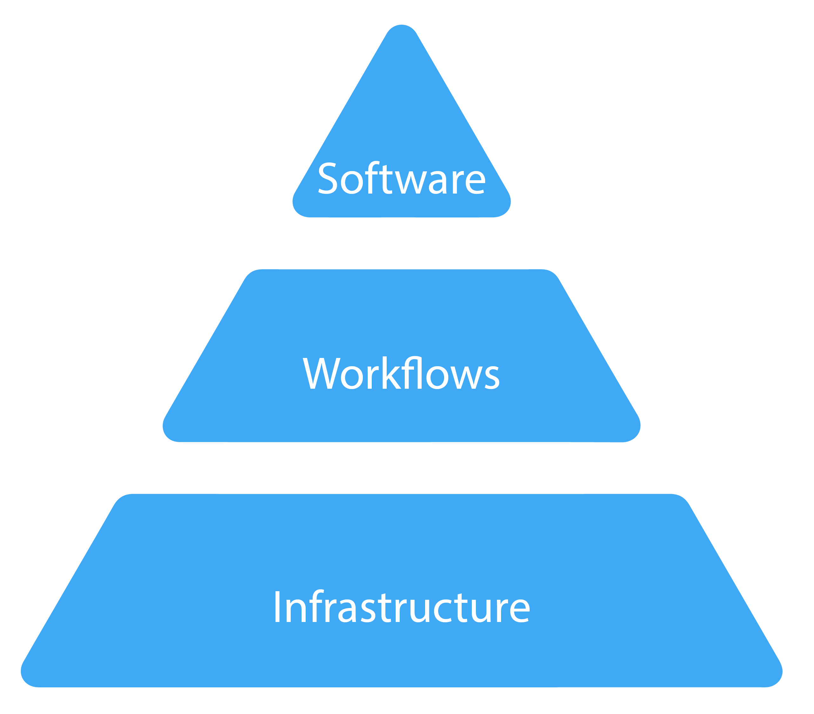

Workflow Management Languages -
Practical Application
Kelsey Florek, PhD, MPH
Senior Genomics and Data Scientist
Wisconsin State Laboratory of Hygiene
September 24, 2024
www.k-florek.net/talks
Scientific data workloads in a regulated environment
research software → testing laboratory (production)
Bioinformatics Software/Workflows
- Developed by a researcher or student
- Software updates slow or non-existent
- Limited documentation
- Limited scope or applicability
- Suboptimal resource usage
Testing Laboratory Requirements
- Validation/Verification
- Consistency: algorithms and databases
- Audit trails: data & system
- Integration with LIS
- QA/QC/QI
- Data security

Advantages of Workflow Management Languages
Unifying toward a set of common approaches
Nextflow
- Channels/Processes
- Workflow Logs/Process Logs/Trace File/Execution Report
- Task Caching
- Job isolation with Containers
- Compatibility with range of HPC and Cloud platforms
WDL (Cromwell)
- Task
- Workflow Logs/Call Logs
- Call Caching/Checkpoint Files
- Job isolation with Containers
- Compatibility with range of HPC and Cloud platforms
SnakeMake
- Rule
- Rule Logs/Reports
- Between Workflow Caching
- Job isolation with Containers
- Limited compatibility with Cloud platforms
Advantages of Workflow Management Languages
Unifying toward a set of common approaches
Nextflow
- Channels/Processes
- Workflow Logs/Process Logs/Trace File/Execution Report
- Task Caching
- Job isolation with Containers
- Compatibility with range of HPC and Cloud platforms
WDL (Cromwell)
- Task
- Workflow Logs/Call Logs
- Call Caching/Checkpoint Files
- Job isolation with Containers
- Compatibility with range of HPC and Cloud platforms
SnakeMake
- Rule
- Rule Logs/Reports
- Between Workflow Caching
- Job isolation with Containers
- Limited compatibility with Cloud platforms
Addressing Regulatory Requirements (A CAP Perspective)
Addressing Regulatory Requirements (A CAP Perspective)
Infrastructure
- Encrypted Electronic Data Transfer
- Data Transfer Integrity Check
- Data Backups
- Storage practices and retention times
- System Authentication/Activity Logs
- Change Management Process (users or infrastructure)
- Continuity of Operations Plan
- Disaster Recovery Testing Records
Addressing Regulatory Requirements (A CAP Perspective)
Infrastructure
- Encrypted Electronic Data Transfer
- Data Transfer Integrity Check
- Data Backups
- Storage practices and retention times
- System Authentication/Activity Logs
- Change Management Process (users or infrastructure)
- Continuity of Operations Plan
- Disaster Recovery Testing Records
Addressing Regulatory Requirements (A CAP Perspective)
Workflows/Software

- Software/Workflow Version
- Source code versioning system
- Unit Tests, Pos/Neg Tests, Integration Tests
- Records of monitoring software updates
- Data Provenance tracking through the procedure
- Controls, Metrics, QC
- Input Files/Output Files/Databases
Addressing Regulatory Requirements (A CAP Perspective)
Workflows/Software
- Software/Workflow Version
- Source code versioning system
- Unit Tests, Pos/Neg Tests, Integration Tests
- Records of monitoring software updates
- Data Provenance tracking through the procedure
- Controls, Metrics, QC
- Input Files/Output Files/Databases
What is the role of a bioinformatician?
Testing Personnel - Individuals responsible for performing laboratory assays and reporting laboratory results
Test System - The process that includes pre-analytic, analytic, and post-analytic steps used to produce a test result or set of results. A test system may be manual, automated, multi-channel or single-use and can include reagents, components, equipment and/or instruments required to produce results. A test system may encompass multiple identical analyzers or devices. Different test systems may be used for the same analyte.
What is the role of a bioinformatician?
Support Staff / Scientist / Engineer
- Script/Software Development
- Workflow Development
- Database Management
- Infrastructure Management
- System Support Contact
- Data Trend Analysis
- Dashboard Development
- Pathogen Subject Matter Expert
- Genomics Subject Matter Expert
- Research Collaborations / Publications